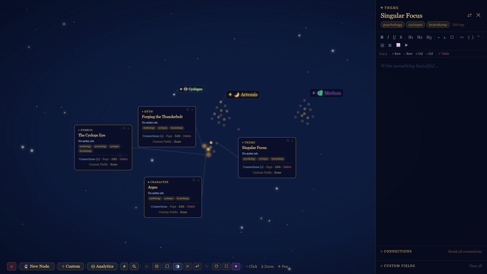
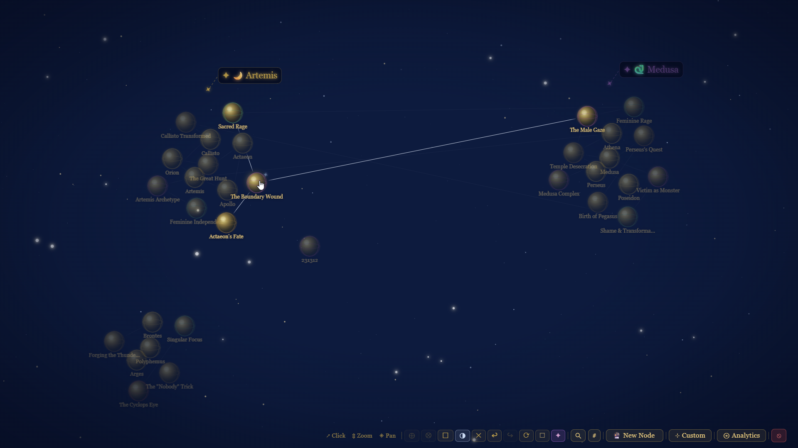
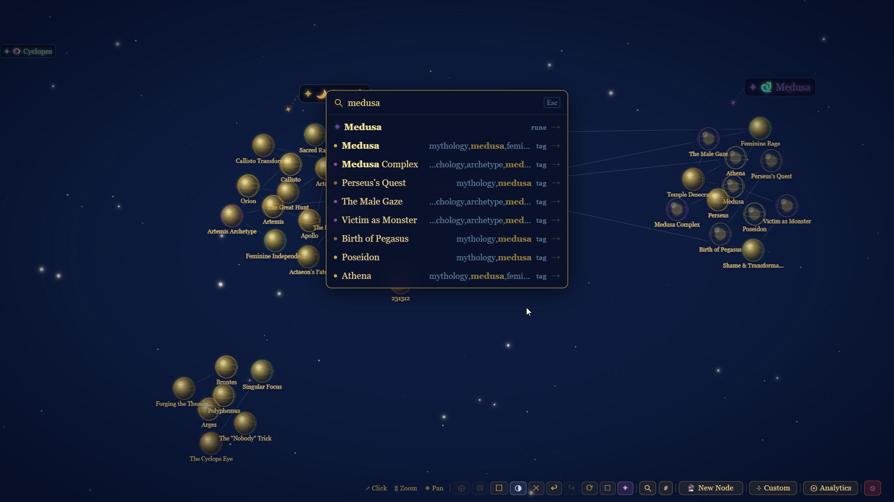
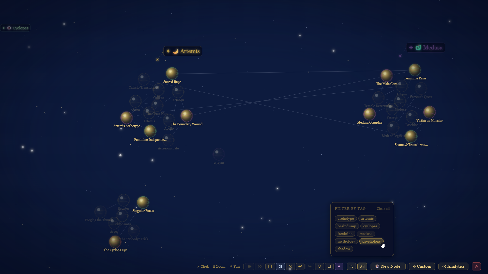
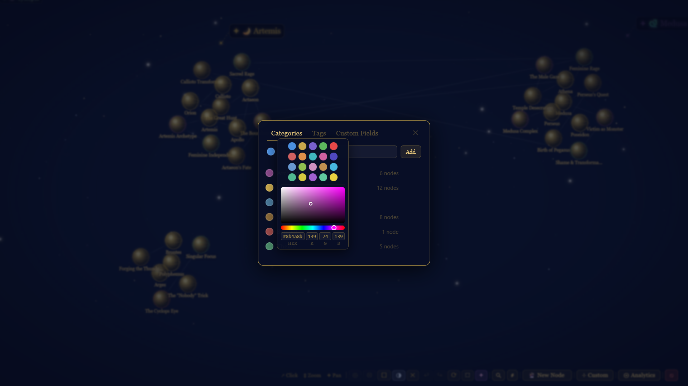

The Living Stars - a knowledge-graph star map¶
The Living Stars is a real, running app. This write-up is the product and build side; there's a companion write-up on the infrastructure and operations that keep it live.
Why I built it¶
I built this as a surprise for someone I love: a wildly creative, three-dimensional thinker who was drafting brilliant, sprawling ideas in spreadsheets. Rows and columns are the wrong shape for a mind like that. He needed room to breathe and to connect everything to everything, a canvas instead of a grid. So I built him one.
What it is¶
The Living Stars is an interactive star map for ideas. Every node is a glowing sphere floating in dark space, thin lines wire related ideas together, and the whole graph simulates physics so it settles into a shape you can zoom and pan around. Click a node and a floating card opens; open the side panel and you get a full rich-text page for that idea. It is built around how a visual, spatial person actually thinks: everything on one canvas, many things open at once, connected rather than filed away.
He always tried to describe the magic around how he thinks. I listened... I tried to bring it into life. It was a bit challenging to be a product owner of something without iterating with, essentially, the stakeholder, but I was dying to make it and to make it right. And to make it a surprise!
What it does¶
- Force-directed graph - nodes simulate physics and their positions persist to the database.
- Floating cards - click a node to open a card; drag them freely, open many at once, with auto / locked-expanded / locked-collapsed view modes.
- Wire connections - drag from a node's handle to link it to another, with animated add and remove.
- Rich side panel - a Tiptap editor with headings, lists, tasks, tables, images, and YouTube embeds.
- Categories and tags - colour-coded categories with a full colour picker (hue, saturation, value), plus a tag filter that ghost-dims everything off-topic.
- Fuzzy search - across titles, tags, categories, and the rich-text page content.
- Zoom-aware UI - cards scale with zoom and switch to a compact format below a threshold; a re-centre action re-simulates the whole graph to fit the viewport.
- Quality-of-life - draft persistence across reloads, and group select-and-drag of multiple nodes or cards.
Tech stack¶
- Vite + vanilla JavaScript - no framework, direct control of the DOM and the render loop.
- D3 - the force simulation, zoom, and pan behind the star map.
- Tiptap - the rich-text editor (tables, task lists, images, YouTube embeds).
- Fuse.js - client-side fuzzy search.
- Supabase (PostgreSQL) - persistence for nodes, positions, categories, connections, and rich content.
What I got out of it¶
This was end-to-end ownership of a real interactive product: the visual design, the graph interactions, the data model, the search, and persisting live UI state (positions, connections, view modes) back to a database. Getting a force simulation to feel good, and making a graph that stays readable as it grows, taught me a lot about both front-end craft and thinking in relationships rather than rows.
A note on AI¶
I built this while pairing with AI, the way I work on everything: I drove the design and the decisions and used AI as a fast implementation partner and a way to learn unfamiliar pieces (D3 force simulation, Tiptap, Supabase) as I went. The direction, the judgement, and the "no, do it this way" were mine. I believe in being upfront about where AI helped.
Under the hood¶
This is a real, running system, hosted on Cloudflare and backed by a managed Postgres database, with automated deployments and scheduled backups. If you're interested in the infrastructure and operations side, there's a companion write-up in the DevOps hub: The Living Stars - infrastructure and operations.
Screenshots¶
All from a small Greek mythology AI-generated showcase dataset.




